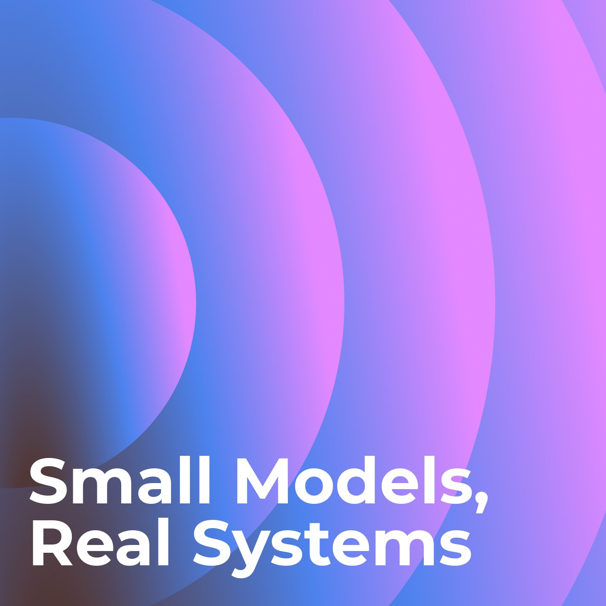

Small Models, Real Systems
A weekly ~5-minute research digest on fine-tuning small language models (LoRA/QLoRA/PEFT, distillation, instruction and structured-output tuning) for metadata generation and content-understanding systems: tagging, attribute extraction, taxonomy classification, moderation and retrieval enrichment. Practical methods, evaluation, and production lessons. Produced by Mylari.
Episodes
Distill, then win on systems (test edition, 30 Sep 2026)
Amazon's parallel-decoding attribute extractor, AliExpress's correct-to-predict multimodal extraction, an AWS SFT+GRPO tagging walkthrough, Indeed's single-token scoring in production, and SRJudge's shortlist-then-reason concept tagging.